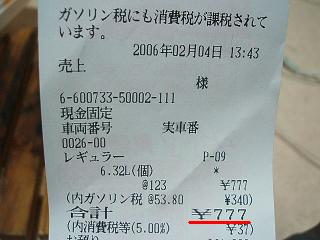

日々、想ふ
〜過去感じたことがつれづれと〜
（できるだけ最大化してお読みください）
日々、想ふ
昼寝したい。２/１５
超寝不足
それでも午前
９時に起床
タケユキです。
とにかく生活習慣を崩すまいと躍起になってます。
今日の悩み：いろいろと。
それでも勝ちは勝ち。２/１４
株取引
＋３００
超微妙
タケユキです。
今日の前場は荒れ放題で
監視銘柄ほぼすべてがマイナス、
しかも持ってた株が一時ストップ安へ。
ちなみにライブドアではありません。
もうこれはどうにもならねえやとストップ安で買い増し、
それからほっといて午後に株価見たら戻していて
今日の終値で＋３００円という微妙な結果。
いやいいんですが。
今日の部屋：ちょっと汚くなった。
なんというか。２/１３
日付けだけ
変えて気分は
更新終了
タケユキです。
昨日の日記は一昨日の日記の日付けだけ変えて
更新した気分になってみました。
これも世に言うリサイクルってやつかと。
明日は平日です。
特になにもない平日ですよ。
マスコミに踊らされてなるものか。
今日の部屋：ちょっと掃除してみた。
眠い時間。２/１２
夜明けまで
オリンピックは
放送中
タケユキです。
そんなわけで寝ようと思うも
寝るかどうか迷う。
たぶん寝るけども。
今日の部屋：掃除せにゃ。
眠い時間。２/１１
夜明けまで
オリンピックは
放送中
タケユキです。
そんなわけで寝ようと思うも
今からモーグルの決勝をやるみたいです。
寝るかどうか迷う。
たぶん寝るけども。
今日の部屋：掃除せにゃ。
今日は微妙にあったかいけども。２/１０
春休み
でも今二月
まだ寒い
タケユキです。
今日でとりあえずテストが終了し
春休みになったわけですが
気温はまだ１０度を下回ってる日がほとんどなわけで
それで春休みと言っていいものか。
とかいう文句もありかと思うけど
休みは休みでうれしいのでいろいろやりたいと思います。
今日の晩飯：ニッショーで半額の弁当。
消化不良。２/９
やることは
あるはずだけど
進まない
タケユキです。
最近いろんな方面でやるべきことがある気がするけど
なんか動く気にならない自分がいるような。
勉強であったり、その他の用事であったり。
友達にメールも返してねえや。
あーもうめんどくさ。
今日の晩飯：ここ最近同じ料理食ってる。
願い２。２/８
引きこもり
勉強じゃなくて
ゲーム漬け
タケユキです。
さて、テスト期間中なわけですが、
ゲームやってます。
止まりません。
５分勉強して３０分ゲームする、みたいな。
誰か助けて。
今日の目標：ゲーム封印。
願い１。２/７
含み損
含み益とで
プラマイ０
タケユキです。
ライブドアの株の含み損がちょっときつい状況になってたんだけど
同じグループ企業ライブドアオートの株がストップ高にまで上昇、
LDの含み損とLDAの含み益とでちょうど相殺されるような状況になりました。
これって結局のとこ取引してないのと同じ状況ですか。
ライブドア、頼むからもう下がらんとってくれ。
ライブドアオート、頼むからもうちょっとあがってくれ。
今日の目標：明日８：３０起床。
テストシーズン。２/６
学校に
行って５分で
すぐ帰る
タケユキです。
今日はレポートだけ出しに学校行って、
それから家帰って勉強な空気でした。
いまいちやる気が起きんけど。
日記の更新もいまいちやる気が起きんけど。
あ、それは前からですかそうですか。
今日のデータベース：覚えることばっかりですか。
希望的観測。２/５
明日こそ
本気でがんばる
テスト勉
タケユキです。
今日バイトから帰ってきてからやろうと思ってたけど
なんかめんどくなったので寝ます。
明日必死でやったらなんとかなるだろう。
今日のビビアン：高いらしいっすよ。
小さな幸せ。２/４
「幸せ」は
小さくても
「幸せ」だ
タケユキです。
というわけでささいなことでも
幸せを幸せと感じれる、そんな気持ちを持っていたい。
今日の幸せ：ガソリンスタンドにて。

無題。２/３
寒すぎて
バイク乗ったら
肌荒れる
タケユキです。
用事で夜にバイク乗ったら。
手袋しててもこれでもかってくらい冷える。
こんなに手を冷やしてたら手も荒れるってもんで。
俺が野菜食わないからってのは言わない方向で。
今日の更新：最近1日遅れが多い。
ツーツー。２/２
飲んでたら
更新忘れる
これ普通
タケユキです。
なので昨日更新するの忘れて寝てた。
今３日の朝１０：１２．
２限が１０：３０．
急げよ、俺。
今日の：衝撃。